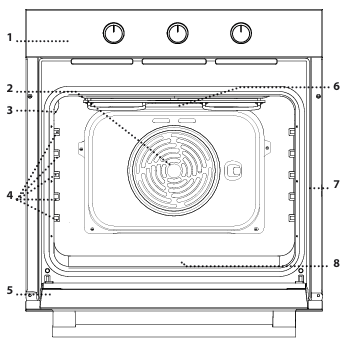
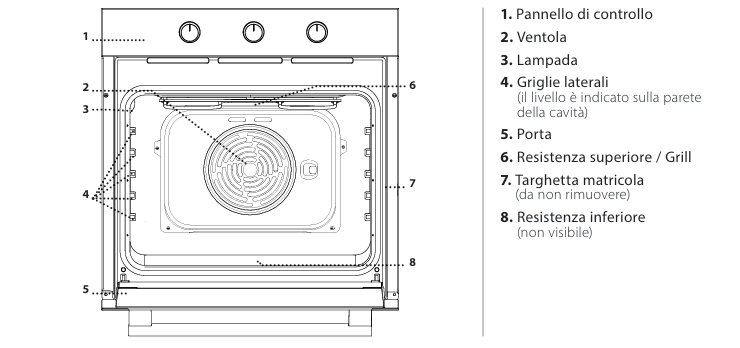
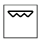
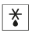

Instrucciones horno
Descripción del producto
- 1. Panel de control
- 2. Ventilador
- 3. Lámpara
- 4. Parrillas laterales
- 5. Puerta
- 6. Resistencia superior / Grill
- 7. Placa de matrícula (no remover)
- 8. Resistencia inferior (no visible)  
Panel de control
- 1. Perilla de selección
- 2. Perilla del temporizador
- 3. Perilla del termostato
- 4. LED de termostato/precalentamiento

Funciones del horno
- Off: para apagar el horno.
- Luz: para encender la luz del compartimento.
- Estático: para cocinar cualquier tipo de alimento en una sola rejilla. Se recomienda usar el nivel 2.
- Diamond Clean: la acción del vapor liberado durante este ciclo especial de limpieza a baja temperatura permite eliminar fácilmente suciedad y restos de alimentos.
- Ventilado: para hornear pasteles con relleno líquido en una sola rejilla. También se puede usar para cocinar en dos niveles.
- Grill: para asar costillas, brochetas y salchichas, gratinar verduras o dorar pan. 
- Turbo Grill: para asar piezas grandes de carne (piernas, roast beef, pollos).
- Descongelar: para acelerar el proceso de descongelación de alimentos. 


Uso diario
- Seleccionar una función: girar la perilla de selección hasta el símbolo de la función deseada.
- Iniciar una función manual: girar la perilla del termostato para ajustar la temperatura deseada.
- Precalentamiento: el LED del termostato encendido indica que se está realizando el precalentamiento.
- Configurar el temporizador: girar la perilla del temporizador completamente en el sentido horario y luego ajustarla a la duración deseada girando en sentido antihorario.
Tabla de cocción
- Bizcochos con levadura: 150 - 170°C durante 30 - 90 minutos en el nivel 2.
- Bizcochos rellenos: 160 - 200°C durante 35 - 90 minutos en el nivel 2.
- Galletas/Muffins: 160 - 180°C durante 15 - 35 minutos en el nivel 2 o 3.
- Pizza/Focaccia: 220 - 250°C durante 10 - 25 minutos en el nivel 1 o 2.
- Lasagna/Pasta al horno: 190 - 200°C durante 45 - 65 minutos en el nivel 2.
- Asado de cerdo con corteza: 180 - 190°C durante 110 - 150 minutos en el nivel 2.
Cuidado y limpieza
- Limpiar las superficies externas con un paño de microfibra húmedo.
- Limpiar las superficies internas después de cada uso, dejando enfriar el horno.
- Activar la función Diamond Clean para una limpieza óptima de las superficies internas.
- Remojar los accesorios con detergente para platos después del uso.
Consejos útiles
- Usar la función Ventilado para cocinar simultáneamente alimentos diferentes en varios niveles.
- Usar utensilios de metal oscuro o recipientes de pyrex o cerámica para tiempos de cocción más largos.
Si encuentras problemas, contacta con el anfitrión, Alessandro.